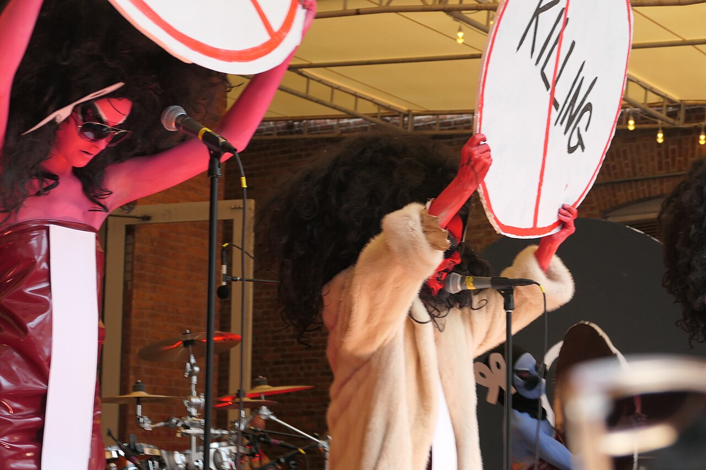

The Voluptuous Horror of Karen Black performs as part of Vaginal Davis' exhibit at MoMA PS1
2025, October 20

The Voluptuous Horror of Karen Black performs as part of Vaginal Davis' exhibit at MoMA PS1
2025, October 20
United States
Beginning October 9, 2025, through March 2, 2026, MoMA PS1, in Long Island City, Queens, New York New York City is hosting an exhibit by artist Vaginal Davis known as Magnificent Product. The exhibit features much of Davis' work from the past 50 years and also features photographs by Berlin based photographer, Annette Frick. As a part of Vaginal Davis' exhibit at MoMA PS1, Kembra Pfahler's The Voluptuous Horror of Karen Black performed in the courtyard of the museum on October 11.At 10:00 a.m. EDT (1400 UTC) on the morning of the performance, the museum sent an email to Eventbrite ticket holders stating: "Arrive by 3 p.m. to be sure you are able to experience the performance in its entirety. Due to expected high attendance, we highly encourage attendees to arrive in advance of performance start time." Although rain was forecast and did occur briefly, the weather eventually cleared.
Davis introduced the band at the beginning, who then performed a number of both old and new songs. The courtyard was almost full, with audience members even crowding onto the stairs which led up to the stage. During the performance of Underwear Drawer, Pfahler and Alice Moy took underwear out from a box on the stage and threw it into the audience.
After the set, Pfahler invited people to come up on stage and say hello. Audience members and artists mingled and took photos together until the museum closed.
The pre-arranged set list was:
Soldier of Female
Cunt Shaped Like a Pillowcase
Bills to Pay
Neighborachie
School of Hate
Water Coffin
One Man Lady
Where You Belong
Underwear Drawer
Siobhan
Mr. Twilight (this song was omitted)
Alaska
DetroitThe performers of the night were were:
Kembra Pfahler (vocals)
Samoa Moriki (guitar)
Eric Robel (drums)
Gyda Gash (bass)
Alice Moy (blue)
Christian Music (white)
Chloé Blackshire (red)